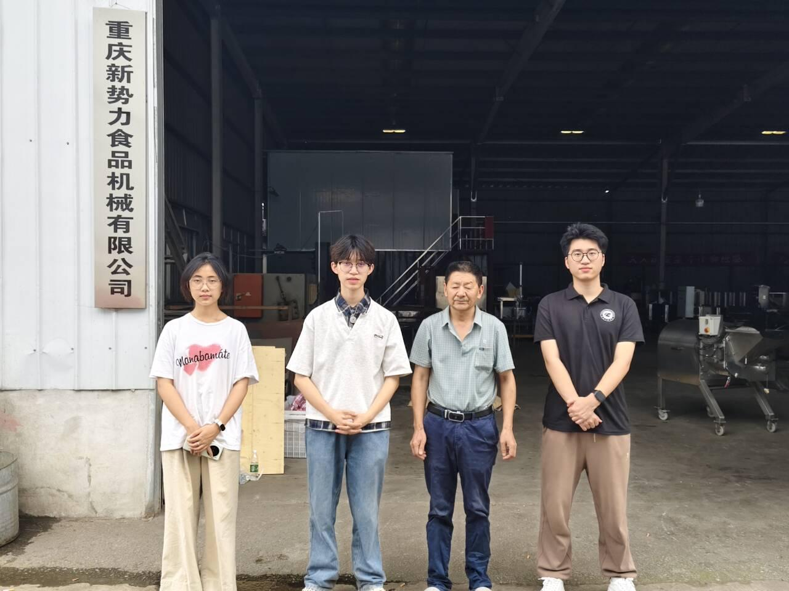
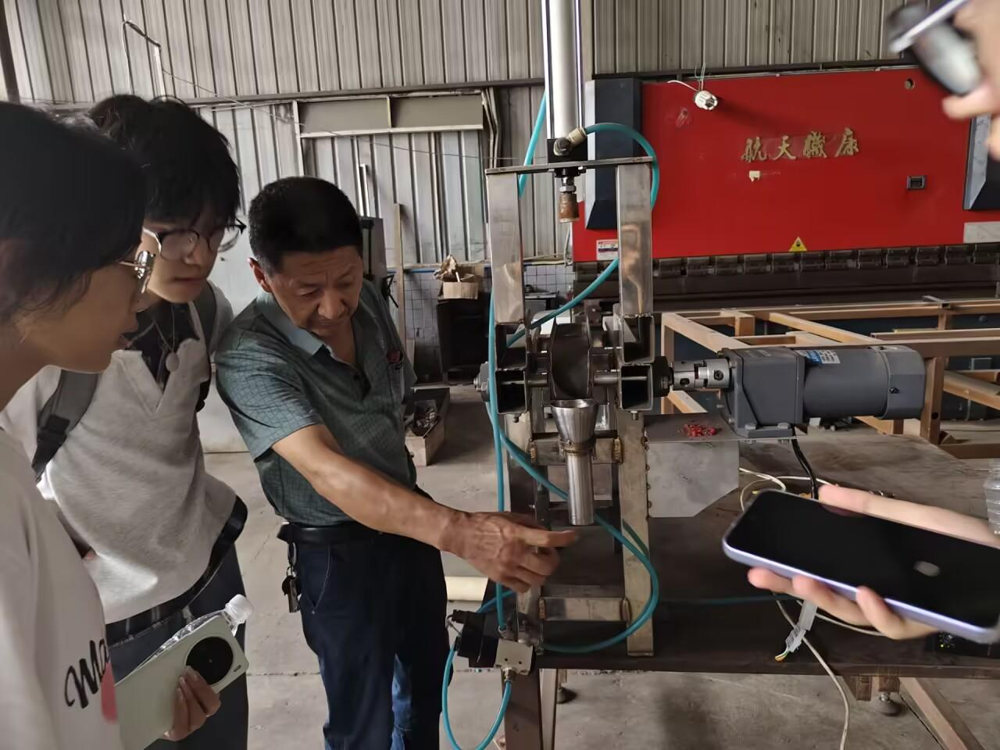
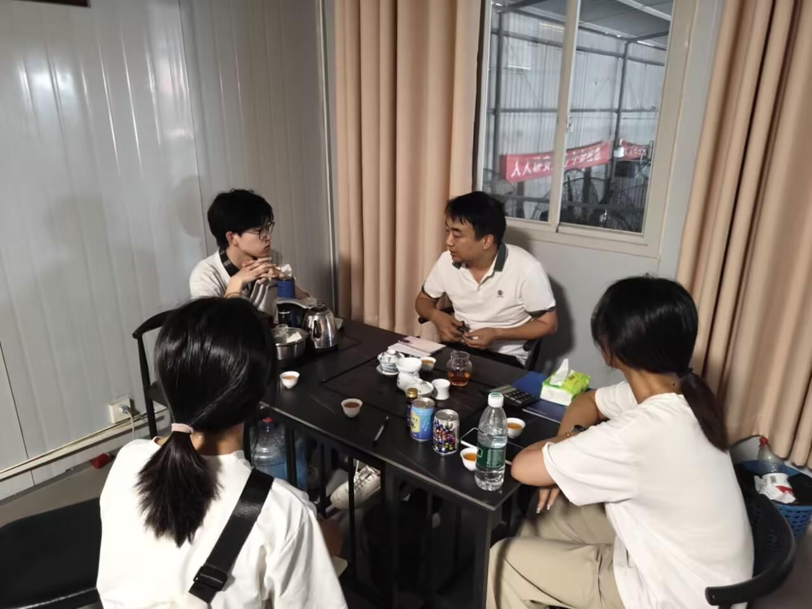
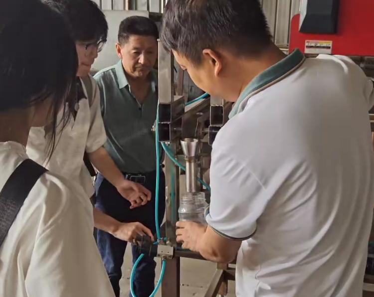

走进合作企业 · 学习半自动生产设备 · 推进项目实践落地

本次团队前往合作企业开展实地调研，依托双方深度合作关系， 重点参观合作企业研发的半自动排骨香肠生产设备。 通过现场学习设备操作流程、运行原理与使用规范， 进一步熟悉设备性能和实际生产应用情况。
同时，团队借助本次交流对接后续工作规划， 围绕设备落地、调试使用、工艺适配等内容明确推进方向， 梳理双方分工与实施步骤，为后续完善生产方案、 推动设备投入量产以及排骨香肠智能化生产项目落地奠定基础。
团队抵达合作企业后，企业负责人首先完整演示了半自动排骨香肠生产设备的整体运行流程， 并对各环节的实际生产操作方式进行说明。随后，团队参观生产车间及配套设施， 直观了解企业标准化生产模式。
参观结束后，双方围绕前期校企合作情况、现阶段项目进度以及存在的问题开展专项交流， 并结合设备现状明确下一阶段项目推进任务和具体工作安排。

会议结束后，团队再次返回生产现场，对半自动生产设备进行深入学习， 系统了解设备内部工作原理和完整生产工艺流程，并结合实际运行情况分析设备优势与不足， 为后续设备优化和工艺改进积累一线资料。


通过与企业负责人的深入交流，团队系统总结了前期合作项目的开展成果和存在不足， 明确了下一阶段双方的合作方向、工作分工与推进计划， 为项目后续落地提供了更加明确的实践依据。
同时，通过对设备优缺点的深入探讨，团队进一步掌握了现有半自动设备的性能优势与可优化空间， 为后续设备改良、工艺升级、智能化方案优化、降低生产成本和提升生产效率提供了真实可靠的现实依据。
本次实地调研使团队近距离熟悉了半自动生产设备的原理与流程， 积累了一线实操经验，补齐了专业实践短板。 通过与企业负责人交流，团队进一步理清了项目推进思路， 明确了后续工作方向，并加深了双方合作默契。
此外，对设备优势与不足的客观分析，也为设备优化和工艺改进提供了参考。 本次活动将理论知识与生产实践相结合，不仅提升了团队协作与问题分析能力， 也为排骨香肠智能化生产项目进一步落地筑牢基础，具有较强的实践意义与应用价值。